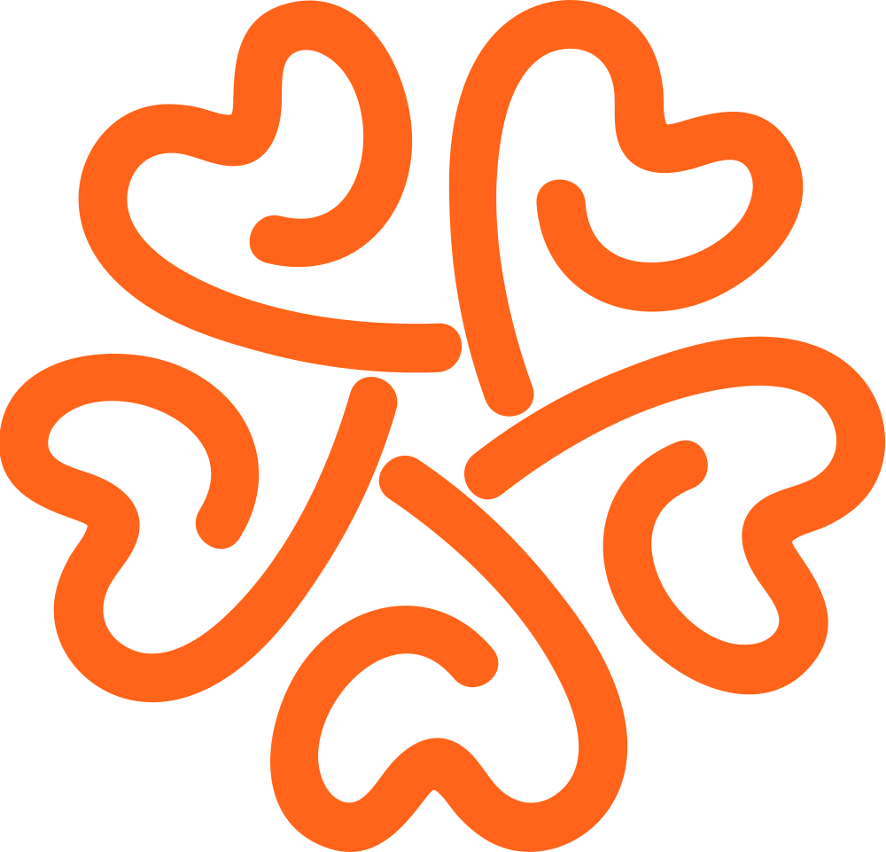
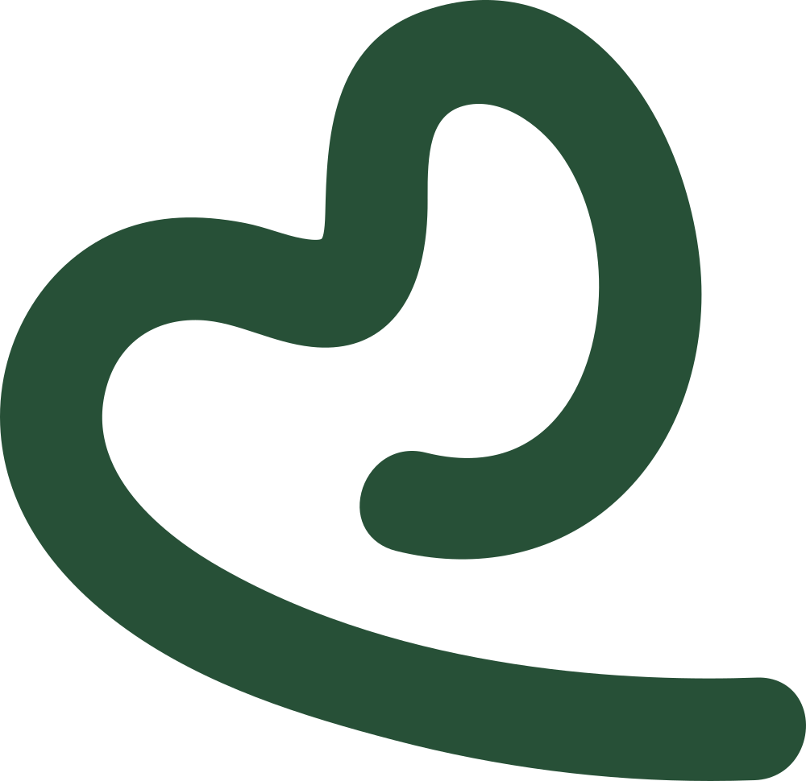
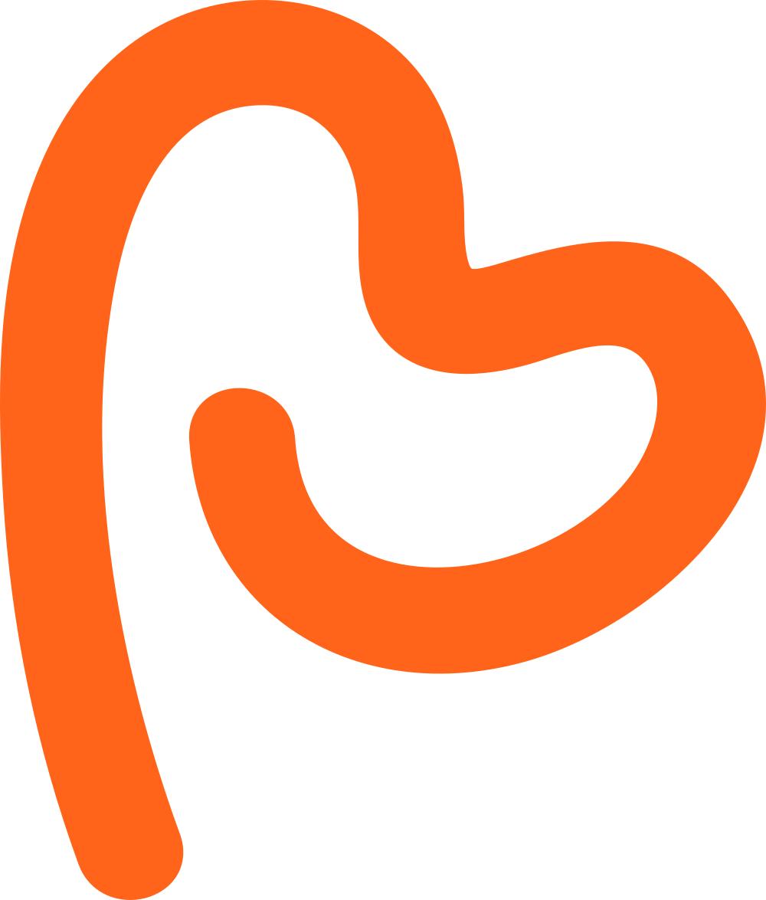
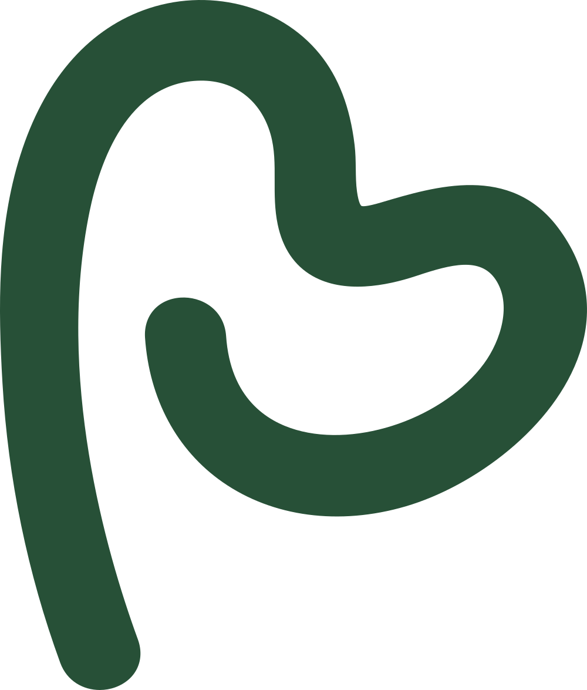
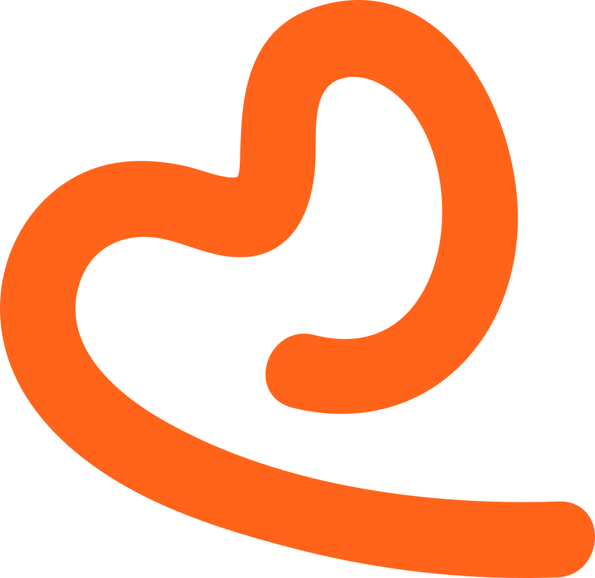

01Exclusivo
Protocolo TMB
Para quem tem traumas, medos e bloqueios e quer voltar a cuidar da saúde bucal com acolhimento.
Sou a Dra. Leliane Andrade, dentista integrativa. No ILA, o cuidado começa antes: na forma de escutar, de avaliar e de conduzir cada caso. Para quem tem traumas, medos e bloqueios, criei o Protocolo TMB.
Muitas vezes, o medo não nasce agora. Ele vem de lá atrás, de uma experiência que marcou, machucou ou assustou. Ninguém deveria carregar isso sozinho, e muito menos deixar de cuidar da saúde por causa disso. Seu medo faz sentido.

Isso tem nome: traumas, medos e bloqueios. E tem um jeito diferente de cuidar.
Um protocolo de diagnóstico que criei para quem teve experiências ruins em outros consultórios e quer voltar a cuidar da saúde bucal, mas não consegue. A ideia não é forçar ninguém: é entender e desmistificar o que te afasta da cadeira, cuidando da saúde bucal e também da mental.
Uma experiência, muitas vezes na infância, que marcou, machucou ou assustou. A gente reconhece essa história antes de qualquer procedimento, porque ela explica muito do que você sente hoje.
Aquele aperto no peito só de pensar na cadeira, no barulho, no cheiro. Seu medo faz sentido, e entender de onde ele vem muda a forma de conduzir cada etapa do atendimento.
Quando você quer se cuidar, mas não consegue dar o passo. Aqui o bloqueio é respeitado e trabalhado no seu tempo, nunca forçado.
Antes de qualquer procedimento, a conversa. Você conta a sua história com calma.
O diagnóstico TMB e uma investigação a fundo, porque nem todo desconforto começa onde aparece.
Um plano explicado, que respeita o tempo de cada tratamento. Decisão aqui não é pressa.
Você entende o processo e cuida junto, com prevenção. Entender o processo muda o resultado.
Do primeiro dentinho ao sorriso dos avós (de 0 a 100 anos), com o mesmo olhar integrativo: tratar a causa, não só o sintoma.
Para quem tem traumas, medos e bloqueios e quer voltar a cuidar da saúde bucal com acolhimento.

Olhar para a pessoa inteira, não só para a boca. Muitas vezes, o sintoma é só a ponta do iceberg.

Recurso terapêutico complementar, aplicado por dentista ozonioterapeuta e indicado caso a caso.
Tratamentos com materiais livres de metais, dentro da visão integrativa de saúde. Indicação feita na avaliação.
Bebês, crianças, adultos e idosos. Cuidar cedo e com carinho evita que o medo se forme.

Desgaste, sensibilidade e pequenas fraturas podem vir de hábitos do dia a dia. Identificar a causa cedo preserva o sorriso.

Produtos selecionados para o cuidado em casa e capacitações para profissionais da odontologia.
Na odontologia integrativa, a gente não olha só para a boca: olha para a pessoa inteira. Saúde geral, hábitos, emoções e história entram no diagnóstico, porque nem todo desconforto é só sobre dentes.
A saúde da boca está ligada ao organismo todo. Por isso dor, inchaço, sangramento ou sensibilidade não devem ser normalizados. Tratar a causa muda tudo no resultado.
“Um bom resultado não é só estética.”

Muito antes do consultório, existem histórias que moldam a forma como a gente escolhe cuidar. A minha passa pela família, pelos valores que carrego e pela forma como aprendi a olhar cada pessoa como única.
Sou dentista integrativa e ozonioterapeuta, há 10 anos cuidando de pacientes de bebês a idosos, em Rondônia e no Rio Grande do Sul. Com a mesma seriedade que levo a profissão, levo a vida, a família e cada decisão dentro do consultório.
Foi pensando em quem desistiu de se tratar depois de experiências ruins que criei o Protocolo TMB e o ILA: um espaço pensado nos detalhes para oferecer um atendimento com mais atenção, mais critério e mais responsabilidade.
Uma paciente chegou depois de anos sem ir ao dentista, carregando um trauma da infância. Decidiu tentar de novo. Desde aquela primeira consulta, já se passaram 6 anos, e o medo ficou para trás.
“Para mim, não existe resultado mais bonito do que esse: devolver a alguém a tranquilidade de entrar em um consultório.” Dra. Leliane Andrade
Ver depoimentos no Instagram

Leva menos de um minuto. Sua mensagem chega no WhatsApp do ILA e a equipe responde para combinar o melhor horário.
Se a sua dúvida não estiver aqui, chama no WhatsApp que a gente responde.
Tirar dúvida no WhatsApp →É muito mais comum do que você imagina, e aqui ninguém vai te julgar. Quem passou anos longe do dentista quase sempre teve um motivo. Nosso trabalho começa entendendo esse motivo, não apontando o problema.
Aqui o atendimento respeita o tempo de cada paciente. Nada é decidido com pressa, e cada etapa é explicada antes. Entender o que você sente faz parte do Protocolo TMB.
Não precisa. A primeira consulta é para conversar, entender a sua história e avaliar. Nenhum procedimento é feito sem você entender e concordar.
É uma forma de cuidar que olha o paciente como um todo. Além dos dentes, consideramos saúde geral, hábitos e emoções, porque tudo isso influencia a saúde da boca, e vice-versa.
É um recurso terapêutico complementar que pode ser usado em alguns tratamentos odontológicos. A indicação é sempre individual e feita na avaliação, por dentista habilitada em ozonioterapia.
Sim, de bebês a idosos. Para os pequenos, cuidar cedo e com carinho evita que o medo se forme. Para os mais velhos, paciência e explicação em cada etapa.
É a escolha de materiais livres de metais nos tratamentos, dentro da visão integrativa de saúde. A indicação é feita na avaliação, caso a caso.
Sim. Além do atendimento presencial em Porto Velho (RO) e Caxias do Sul (RS), a Dra. Leliane também atende online. Chame no WhatsApp para saber como funciona.
O ILA está de portas abertas. O primeiro passo é só uma mensagem.